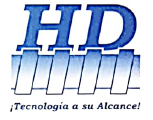
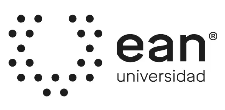

Soy un Estudiante del programa Ingeniería de Sistemas de la Universidad EAN. Mis intereses académicos se centran en el aprendizaje de herramientas de
desarrollo, así como los procesos necesarios para la documentación de diferentes proyectos enfocados en soluciones tecnológicas para necesidades empresariales.
Algunos datos relevantes son:
Cuento con experiencia en sectores públicos y privados, generalmente en enfoques de soporte y documentación de aplicativos, tanto en la ejecución como en la proyección y el desarrollo de nuevos sistemas de información. A continuación se relaciona cada experiencia laboral:
Ministerio de Educación NacionalRol: Líder Funcional AplicativoFecha: 2021 - Actualidad |
|
|  |
Industrias HDRol: Practicante SENAFecha: 2020 |
Getel SASRol: Practicante SENAFecha: 2018 - 2019 |
|
Intermarketing DirectRol: Practicante SENAFecha: 2016 - 2017 |
Siempre me ha interesado adquirir nuevos conocimientos que me permitan crecer personal y profesionalmente, por lo cual poseo los siguientes estudios formales y cursos:
|  |
Ingeniero de SistemasEstado: CursandoSemestre Actual: 7mo Semestre |
Tecnólogo en Análisis y Desarrollo de SistemasEstado: FinalizadoFecha de grado: 2020 |
|
Técnico en Desarrollo WebEstado: FinalizadoFecha de grado: 2017 |
|
Web Programming (Korean Course)Estado: FinalizadoFecha de grado: 2019 |
Para complementar lo expuesto en el módulo de educación, acá se relacionan mis principales habilidades y características transversales
Aunque no poseo mucha experiencia en desarrollos, a continuación relaciono lkos proyectos de los cuales he hecho parte, y mi rol dentro de los mismos.